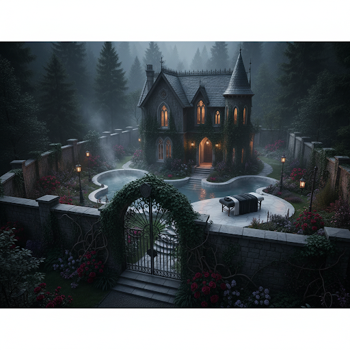
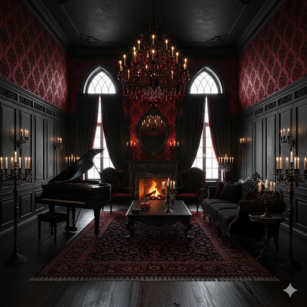

女主角與男主角的完整背景故事
德庫莉雅（Draculia）
人類時期
在她還是人類的時候，德庫莉雅是聖光教會中的一名虔誠信徒。她有一頭火紅的長髮和深邃的藍色眼睛，無論走到哪裡，她那迷人的外貌和堅定的信仰總是讓她在人群中獨樹一幟。她生前性格溫柔、善良，對教會充滿敬畏，也深信聖光教會是唯一的救贖之道。然而，隨著她深入教會的內部，她開始發現許多教會的黑暗面——教會高層的貪婪、腐敗，甚至對信徒的剝削與壓迫。這些真相讓她的信仰動搖，並開始產生懷疑。
當她試圖將這些秘密公之於眾時，她被教會視為威脅，遭到追殺。最終，她被指控為叛徒，在一次公開處決中慘死。死後，她的靈魂來到了地獄。
德庫莉雅的靈魂在地獄中遊蕩時，遇到了莉莉絲。莉莉絲，一位強大的墮天使，曾經是天堂的最高指揮之一，但因對天國的失望而墮落。她不僅擁有與天使相等的力量，還能自由穿梭於地獄與人間之間。莉莉絲對德庫莉雅的堅定與不屈心靈產生了濃厚的興趣，並提出了一個契約：她願意幫助德庫莉雅復活，但代價是永生且必須以吸血為生。
在契約中，莉莉絲告訴德庫莉雅，若她選擇接受這個提議，她將會永生不死，並且擁有吸血鬼的強大力量。但同時，她的身體也會發生變化——紅色的頭髮會變為黑色，藍色的眼睛會變為血紅色，她的身高會增加二十公分，達到175公分。更重要的是，德庫莉雅必須放棄人類的感情和信仰，轉而承擔吸血鬼的命運，這意味著她將永遠無法再回到過去的生活。
轉變為吸血鬼
經過一番激烈的內心掙扎，德庫莉雅最終選擇了復活。她不僅無法原諒那些背叛她的教會高層，還對自己過去的軟弱和無力深感憤怒。她決定用永生和強大的力量來反抗這個不公的世界，特別是對抗那個曾經支配她一切的聖光教會。
當她接受莉莉絲的契約時，一股強大的力量湧入她的體內。她的身體發生了驚人的變化——她那原本火紅的頭髮變成了深沉的黑色，藍色的眼睛變成了如血般的紅色。她的身高增加了二十公分，變得更加高挑和迷人。儘管這些變化讓她感到痛苦，但她同時也感受到一股來自地獄的強大力量，這讓她的內心再次燃起了希望。
性格與心理
轉變成吸血鬼後，德庫莉雅變得更加堅強、冷酷。她不再是那個虔誠的信徒，而是變成了一位反叛的戰士。她不僅要反抗教會的暴政，還要尋找自己的真正存在意義。雖然她變得更加自信和果斷，但心中依然存有對過去的懷念與迷茫。她開始質疑是否自己做出了正確的選擇，畢竟，她的永生代價不僅是身體上的變化，還有她對過去信仰的割裂。

薩麥洛（Samaelo）
天堂的天使時期
薩麥洛原本是天堂（大氣層）中的一位高級天使，擁有強大的力量與威嚴。當他還在天堂時，他是忠誠的天國信徒，曾為維護正義與秩序，並協助指導人類而奮鬥。他的外貌俊美——金色的頭髮、深邃的藍色眼睛、白色的羽翼，象徵著他神聖的身份和天使的純潔。
然而，隨著時間的推移，薩麥洛開始對天國的統治產生了懷疑。他看到了天堂中的不公與腐敗，發現神（耶赫瓦）對地上的苦難漠不關心，無論是人類的痛苦，還是其他墮落的天使的遭遇，都無法得到神的拯救和關注。薩麥洛逐漸對這種不作為感到失望，內心充滿了對現狀的不滿。
他開始質疑自己為何要盡忠於這個體制，為何要繼續維護一個對弱者不公的世界。漸漸地，他的信仰動搖，並開始與其他墮落天使交流。他逐漸意識到，天國並不是唯一的“正義”所在，而所謂的神聖秩序只是一種對強者有利的虛偽標榜。
墮落與放棄天堂
最終，薩麥洛選擇背叛天堂，摒棄了曾經忠誠的信仰。他決定離開天堂，選擇追隨自己的意志和自由，而非遵循一個僅僅為了秩序和權威的虛偽體制。在墮落的過程中，薩麥洛的外貌發生了劇變——他的金色頭髮變為黑色，藍色眼睛轉為翠綠，翅膀由純白變為深邃的黑色。這些變化象徵著他對天國的完全告別，並標誌著他不再屬於那個他曾經效忠的神聖世界。
當他墮落後，薩麥洛失去了與天堂的聯繫，並成為了墮天使之一。雖然他選擇了自由，但他同時也開始意識到墮天使的身份並非那麼光彩照人。墮落的他，不再擁有過去的天使光環，也不再受到天國的庇佑，這使得他感到空虛與孤獨。
在人間的歷程
墜落至凡間後，薩麥爾內心依然保持著對善良與正義的渴望，只是這種“善良”不再是天國強加的標準，而是他自己對世界的理解。他放棄了天國的規則，開始在人間隱匿，過著與世無爭的生活，尋找自己的真正價值。
然而，在他來到人間後，因為他忘記收起黑色翅膀，遭到替教會效忠的聖騎士的攻擊。聖騎士們視他為異端，不斷使用銀製武器攻擊他並對他潑灑聖水。薩麥洛心地善良，不願傷害任何無辜的人，他不僅沒有反抗，甚至選擇讓自己任由他們攻擊，因為他深知，天使與魔鬼的區別不在於外貌而是在於內心，並且他不想為了自己的生存而讓無辜的生命陷入痛苦。

薩麥洛與德庫莉雅的相遇
正當薩麥洛無力抵抗的時候，德庫莉雅出現了。她看到薩麥洛無助的情境，心中泛起了同情。雖然他是一名墮天使，但她看出了他的痛苦與矛盾，並認為他和她有相似之處——兩者都曾背叛過自己的信仰，並承擔著不公平的命運。德庫莉雅決定幫助他，她將薩麥洛帶回自己的古堡，並在她的庇護下安置了他。
在古堡中，薩麥洛與德庫莉雅進行了深入的對話，彼此開誠布公。薩麥洛向德庫莉雅訴說了自己的過去，表達了他對天國的失望以及對自由的渴望。德庫莉雅則向他講述了自己成為吸血鬼的經過，並告訴他她在地獄遇到他的同類並與一位名叫莉莉絲的女人達成契約，選擇了反抗命運。
在這段交流中，薩麥洛逐漸對德庫莉雅產生了深厚的敬意和感情。他發現，儘管兩人身份不同，但他們的目標卻有著異曲同工之處——都在尋求一個更自由、更公正的世界。最終，薩麥洛決定成為德庫莉雅的管家，並以忠誠的態度幫助她實現反抗聖光教會的目標。
性格與心理
薩麥洛的內心充滿了掙扎和矛盾。作為墮天使，他對天國的憤怒和對神的失望深深刻在心中。然而，他的內心依然保有一份善良，這份善良讓他不願傷害任何無辜的人，並在德庫莉雅身邊找到了自己的人生意義。
他對德庫莉雅的感情日益增長，薩麥洛將她視為自己唯一的同伴與心靈的支柱。他的忠誠來自於他對德庫莉雅的理解與尊重，而不是單純的服從。他與德庫莉雅之間的關係不僅是愛情上的依賴，更是一種深層的夥伴關係。
德庫莉雅與薩麥洛的家
他們的家是一座二層樓的歌德式豪宅，隱匿於山林的深處。這座豪宅外觀古老且雄偉，四周被高達三點五公尺的圍牆所環繞，仿佛一座與世隔絕的堡壘。圍牆上長滿了爬藤植物，幾乎遮蔽了視線，唯有通往外界的出口——一扇爬滿藤蔓的大門，獨立而孤立，彷彿守護著這片神秘的領地。
進入家園後，室外的景致更顯奢華與雅緻。中央有一座由大理岩打造的浴池，冰冷的石材和水中的倒影交織成一幅如夢似幻的畫面。浴池旁邊，盛開著五顏六色的玫瑰花，它們在微風中輕輕搖曳，散發著沁人心脾的香氣。
浴池的岸邊擺放著一張按摩床，那是德庫莉雅每次泡完澡後最喜愛的休憩之地。在這裡，薩麥洛會為她進行全身按摩，輕柔的手法讓她的肌肉得以放鬆，緩解來自過去戰鬥與心靈掙扎的疲憊。每一次的按摩，都像是一種無聲的溫柔，傳遞著薩麥洛對她的深情與關懷。

豪宅的內部裝潢
他們的家內部充滿了吸血鬼風格的裝潢。大廳內燭光搖曳，古老的蠟燭和水晶吊燈交相輝映，光芒閃爍的水晶吊燈下，鋼琴的黑色外殼閃著微弱的光澤，仿佛隨時準備演奏出一首撼動人心的樂章。
牆壁和地板的裝飾以黑色與鮮紅色為主調，兩者的對比在這座豪宅中營造出一種神秘而華麗的氛圍。黑色的牆面仿佛吞噬一切，而鮮紅的地板則像是象徵著永不熄滅的烈火，散發出一種無法忽視的誘惑與危險感。
